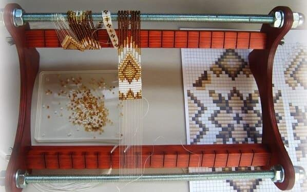

Станок
Бисерное ткачество бывает ручным и станочным. И тому, и другому обычно учится мастер. Станок не сможет сплести за вас шарики или украшение для пасхальных яиц, но он ценен в изготовлении браслетов и кошельков, сложных композиций.
Сегодня многие производители предлагают готовые удобные станки, представляющие собой, в основном, деревянную раму с гвоздиками. Но вы можете отвергнуть такой легкий путь и сделать станок самостоятельно. Это реально: самый простой станок делается из картонной коробки, изделие посложнее – станок из пластикового контейнера. Наконец, из дощечки и гвоздиков вы можете сконструировать прочный полупрофессиональный станок.